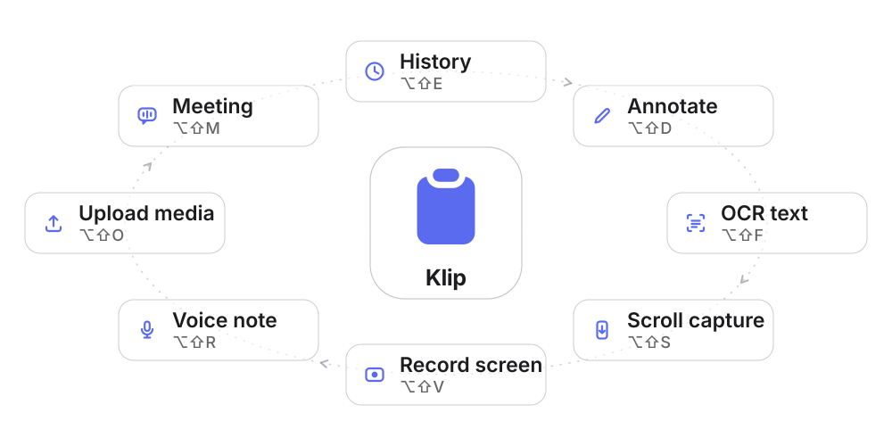

The clipboard for vibe coders.
Everything you copy while building with AI — code, errors, screenshots, prompts and keys — one keystroke away. Capture & annotate, OCR, on-device voice & meeting notes, and an encrypted key vault. Native Swift; nothing leaves your Mac.
No Electron · no accounts · no sync —your clips never leave your Mac.
Live at tamibot.github.io/klip

What's inside
Everything the copy-paste loop needs.
One native menu-bar app for the whole flow — capture it, read it, say it, clean it, and keep your keys safe.
Searchable history
⌥⇧E and your last 500 clips — text, images, video and voice notes — are a keystroke away. Instant search, type filters, full keyboard navigation.
Capture & annotate
⌥⇧D — drag over a frozen screen, then mark it up: arrows, text, blur, spotlight, counters, undo/redo. Lands in history and on the clipboard, confirmed by a toast — never by a panel opening over your work.
Text recognition
⌥⇧F — select any region and its text is OCR'd straight to the clipboard with Apple's Vision engine. On-device, with a toast to confirm.
Voice & video → text
⌥⇧R to dictate, or ⌥⇧O to drop audio & video. Transcribed on your Mac by Whisper — no key, no account, no upload.
Meeting notes, no bot
⌥⇧M on any call — Zoom, Meet, Teams, FaceTime. Records your mic + the system audio (nobody joins) and transcribes it on-device, Me / Them labelled. Forgot to stop it? It stops itself after 15 minutes of silence.
Paste-ready, always clean
One click reformats a clip for WhatsApp, rich email, Markdown or a fenced code block (⌘↩) — and every rich copy is stored clean: bold and emojis kept, backgrounds and fonts dropped.
Record screen → video/GIF
⌥⇧V — select a region (or record the full screen) with system audio; a floating frame marks what is being recorded. It lands in your history: play, save, or one-tap convert to GIF (the first 30 s, 10 fps, 1000 px wide).
Scrolling capture
⌥⇧S — pick the content area and Klip scrolls the page for you: back to the top first, then all the way down, stitching as it goes. One tall screenshot, up to 16 000 px — an endless feed stops there instead of running forever.
Encrypted credentials
Tokens and API keys are auto-detected, shown masked, encrypted at rest (AES-256-GCM, key in the Keychain) and never auto-pasted.
The full list
Everything, one by one.
The nine cards are the shape. These are all 102 capabilities behind them — every line verifiable in the source.
Clipboard
- Automatic historyEvery copy — text, links, file paths, images — captured in the background.
- Wide image formatsTIFF, PNG, JPEG plus anything macOS decodes: HEIC, GIF, WebP…
- Re-copy dedupCopying the same text bumps the clip instead of duplicating it.
- Always paste cleanRich copies stored as Markdown — bold survives, fonts and backgrounds don't.
- Click to pasteA click copies and pastes straight into the app you came from.
- Global panel ⌥⇧EThe history pops up over any app, even full-screen Spaces.
- Keyboard-first panel↑↓ to move, ↩ to paste, ⌘⇧F to star, ⌘⌫ to delete, layered Esc.
- Menu-bar RecentsThe last 10 clips pasteable straight from the status menu.
- Drag clips outRows drag into Finder, Slack or an AI chat as real files.
- From-another-device flagUniversal Clipboard arrivals from iPhone/iPad are flagged in exports.
- Color swatchesA copied hex color shows a real swatch in its row.
- Copy without closingA per-row copy button leaves the panel open for the next grab.
- Adjustable history sizeKeep 20–1000 clips; starred ones are never trimmed away.
- Icon-flash confirmationThe menu-bar icon flashes a checkmark on every copy — no popup.
Capture
- Region capture ⌥⇧DSelect a region and it opens straight in the annotation editor.
- Straight-to-clipboard modeA preference skips the editor: region → history + clipboard.
- OCR capture ⌥⇧FSelect a region; its text is extracted on-device, ready to paste.
- Line-break cleanupOne tap collapses hard-wrapped OCR text into flowing paragraphs.
- Scrolling capture ⌥⇧SKlip auto-scrolls the target app and stitches one long screenshot.
- OCR any stored image"Extract text" on an image row shows and copies the recognized text.
- Re-annotate stored imagesReopen any image in the editor; the result flows back to history.
- 11 annotation toolsArrows, shapes, highlighter, text, blur, spotlight, counter badges and more.
- One-key tool switchingBare letters (V/P/L/A/R/O/H/T/B/S/C) switch tools instantly.
- Full editor chromePalettes, stroke widths, blur slider, undo/redo, zoom with live percentage.
- Copy or save⌘C copies and closes; ⌘S saves a PNG to Downloads, no dialog.
- Editor memoryLast tool, color and stroke width restored on the next capture.
Recording
- Region recording ⌥⇧VH.264 30 fps video of any region, with system audio.
- Full-display recordingOne menu item records the whole screen under your cursor.
- Clean system audioCaptures what's playing, excludes Klip's own sound cues.
- Live frame + stop pillA floating frame marks the region, with one-click stop.
- Recordings in historyPlayable rows with a poster thumbnail and duration badge.
- One-tap GIFConvert a recording to a looping GIF from the toast or the row menu.
- Paste as a fileCopying a video row puts the actual movie file on the clipboard.
- Crash-safe recordingFragmented QuickTime stays playable; the display can't sleep mid-take.
- Video row utilitiesPlay, reveal in Finder, save a copy, or convert to GIF.
Voice & meetings
- Voice notes ⌥⇧RDictate into a popup; the transcript lands in history and clipboard.
- 100% on-deviceWhisperKit on Core ML is the only engine — audio never leaves the Mac.
- Four model sizesTiny to Large v3 Turbo: trade speed for accuracy.
- 12 languages + auto-detectSet the dictation language or let the model detect it.
- Custom vocabularyNames, brands and jargon you list are spelled right.
- Silence guard2 silent minutes ask if you're there; 3 stop the note on their own.
- Audio kept, retry readyThe m4a stays playable; a failed transcription retries in one click.
- Meeting recording ⌥⇧MMic + system audio in one local note — no bot joins the call.
- Me / Them transcriptsBoth tracks transcribed separately and interleaved chronologically.
- Live meeting HUDFloating level meters for both sources; drags anywhere, remembers its spot.
- Meeting auto-stop15 silent minutes end the recording automatically.
- Quit-safe meetingsQuitting mid-meeting saves the note before the app exits.
- Batch transcription ⌥⇧ODrop multiple files; each transcribes with live per-file results.
- Video transcription20+ video formats accepted; the audio track is demuxed on-device.
- WhatsApp voice notes.opus and .oga files upload and transcribe.
- Per-upload languageOverride the language for one file without touching settings.
- Honest model downloadA real percentage and size, only on first use — never silently at launch.
- Clipboard-guarded copyA finished transcript never overwrites something you copied meanwhile.
Paste into AI
- Copy as code block ⌘↩``` fences with the language auto-inferred.
- Copy as MarkdownURLs become links, code gets fenced, prose gets paragraphs.
- History as MarkdownThe whole history exports as one timestamped document.
- Format for WhatsApp*bold*, _italic_, ~strike~ in WhatsApp's own syntax.
- Format for emailReal rich text (RTF) so Mail and Gmail render it formatted.
- Save text as a fileHuge logs become a .txt in Downloads instantly.
- Combine into one PDFMulti-select clips become a single PDF, one page each.
- Export as ZIPSelected clips as numbered PNGs, .txt and audio in one archive.
- Open linkURL clips open in the browser and get their own filter.
Organization
- Instant searchFilter by name, text or preview with every match highlighted.
- Type filter chipsAll, Favorites, Text, Links, Images, Video, Voice, Credentials.
- CollectionsName a batch of clips and filter by it with its own chip.
- FavoritesStarred clips are never auto-trimmed out of the history.
- Rename any clipA custom title becomes its searchable display name.
- Multi-select⌘-click batch mode, Shift-click ranges, select-all-visible.
- Day sectionsToday, Yesterday and weekday headers group the list.
- One-click backupThe whole history zips to Downloads in one action.
- Transactional restoreImport validates first and rolls back on any failure.
- Clear all, guardedWipe the history in one confirmed action.
- Safe deletesMedia deletions ask first; plain text goes instantly.
Secrets & privacy
- Automatic secret detection20+ token patterns masked the moment they're copied.
- Encryption at restAES-256-GCM with the key in the macOS Keychain.
- Self-re-masking revealThe eye button shows a secret only while you look.
- Copy-only credentialsSecrets never auto-paste, never drag out, never join format paths.
- Leak-proof searchQueries skip credential cleartext entirely.
- Masked exportsPDFs, ZIPs and Markdown write a placeholder — never the token.
- Manual mark / unmarkFlag any clip as a credential, or clear a false positive.
- Legacy secret promotionOld plaintext secrets are sealed automatically on load.
- Password-manager respectConcealed and transient pasteboard types are ignored by default.
- Excluded appsA per-app blacklist Klip never records from.
- Owner-only filesThe entire store runs at 0600/0700 permissions.
- Zero network by designOn-device engines only; copied HTML can never phone home.
- Hardened importsZips with symlinks or path escapes are rejected outright.
- Cross-Mac safetyA secret keyed to another Mac stays a placeholder, never raw ciphertext.
- Old-secret cleanupKeys left by removed cloud features are deleted at launch.
Quality of life
- 8 remappable shortcutsRecorder fields, suggestions, collision detection and recovery.
- 8 UI languagesThe whole UI re-localizes live — no restart.
- Launch at loginAuto-enabled on first run, toggleable from menu or Preferences.
- Recording-aware soundsCues mute themselves whenever a mic is hot.
- Actionable toastsEvery toast carries a follow-up, and is announced to VoiceOver.
- First-run welcomePermissions, shortcuts and the model download in one window.
- Built-in guideKlip's shortcuts, macOS's own, and usage tips.
- Full preferencesBehavior, shortcuts, voice, privacy and exclusions in one form.
- Reduce Motion respectedEvery animation degrades to instant swaps.
- Deep VoiceOver supportPer-type rotor actions and credential-safe labels.
- Clean uninstallerRemoves app, login item and cert — asks before touching history.
- Identity migrationsData, settings and keys follow the app across renames.
- Crash recoveryStuck notes recover; a corrupt index is backed up, not overwritten.
- Image detailsPixel-dimension badges, open in Preview, save as PNG.
Muscle memory
Eight global shortcuts. One hand.
Grouped on ⌥⇧ (Option+Shift) on the left of the keyboard — comfortable to hold, and rarely claimed by your editor or browser.
All eight are configurable in Preferences › Shortcuts. Inside the panel: ↑↓ to move, ↩ to paste, ⌘↩ to copy as a code block, Esc to close.
Private by design
Your clipboard is nobody's business but yours.
Klip is local-only. Your history, images and audio live on your Mac with 0600 permissions — and stay there. There is no cloud to opt into: no accounts, no sync, no service to hand your clips to. Klip has nowhere to send them.
-
Encrypted at restDetected keys and tokens are AES-256-GCM encrypted, with the key in the macOS Keychain — never written to
items.jsonor backups in the clear. -
On-device transcriptionVoice, video and meeting notes run offline with Whisper — the only engine Klip has. The model is downloaded once; your audio never goes the other way.
-
No telemetry, everNo analytics, no update pings, no accounts. Klip ignores password-manager content and lets you exclude specific apps.
Get Klip
Build from source in two minutes.
No full Xcode required — just the Command Line Tools. The script builds, signs, installs to Applications and launches it. The first build is slow and quiet while Swift fetches WhisperKit; later ones take seconds.
# Command Line Tools (if you don't have them) xcode-select --install # Clone & install git clone https://github.com/tamibot/klip.git klip cd klip ./install.sh # Changed your mind? --dry-run only prints ./uninstall.sh --dry-run
A clipboard glyph lands in your menu bar — press ⌥⇧E to open the history. macOS 14 (Sonoma) or later, Intel or Apple Silicon; a Windows version is planned.
There is no download link, and that is deliberate. A prebuilt .app handed out on the internet needs Apple Developer ID notarization — without it Gatekeeper quarantines the file and macOS calls Klip damaged. Building it on your own Mac sidesteps that: install.sh signs with a certificate it creates locally in your Keychain, which is also what makes macOS remember the microphone, screen-recording and accessibility permissions across updates. uninstall.sh removes the app, that certificate and the login item, and asks separately before it touches your history.
Free & open source
If Klip earns a spot in your menu bar, star it.
Klip is free, Apache 2.0, and stays on your Mac — no account, no tracking, no paid tier. Stars help other people find it; your ideas and bug reports decide what gets built next.
Not running it yet? Build it in two minutes.